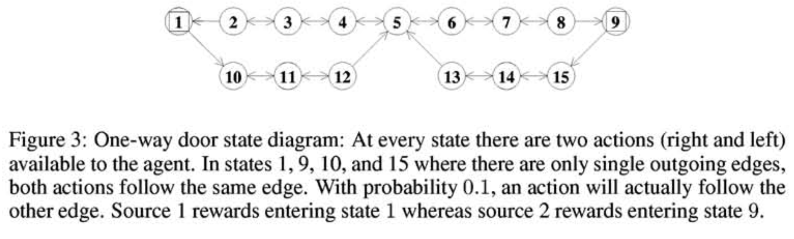

For many problems, the reward signal is not a single scalar, but has multiple scalar components. Creating a single reward value by combining the multiple components can throw anway vial information and can lead to incorrect solutions!
This paper discuss a multiple reward source problem, and the problems of applying traditional RL algorithm.
Introduction
Traditional RL framework vs Real-world scenario
- traditional RL receive scalar value reward every step
- However, this single value can be problematic.
-
First, consider this situation:
Home entertainment system that automatically selects a television program to suit their tastes!
-
a typical / traditional reward function might be :
\[r_{\text{trad}} = \text{Total number of people paying attention to the system}\] - However, there’s a problem. Why?
- A single information of $r_{\text{trad}}=2$ does not contain the information of “WHO EXACTLY are those two people?”
- in this case, multiple rewards come from “different users”
-
-
In other cases, multiple rewards come from “different goals”.
Elevator Scheduling have multiple goals 1) maximize people serviced per minute 2) minimize average waiting time
- for these cases, we might want to update the ‘ratio / importance’ between different goals, without completely retraining the solution from scratch.
Problem Setup
- working on POMDP problem, discrete actions, discrete observations
- $x(t), a(t) \leftarrow$ observation and action
- $\pi(x,a)$ ← probabiolity the agent will take action $a$ when observing $x$.
- $R_s^\pi$ is the expected return from source $s$ for following policy $\pi$
- assume that the algorithm knows the set of sources present at each time step
Goal is to produce an algorithm that will produce a policy, based on previous experience and sources present. Reward is now a triplet!
Balancing Multiple Rewards
1. Policy Votes
-
authors introduce the concept of vote!
\[\text{given state }x, \ \text{reward source }s\rightarrow \text{vote for action }a = v_s (x,a)\]-
of course, their vote for actions will sum to 1
\[\sum_a v_s (x,a) = 1\]
-
-
Using this multiple reward’s vote, they create a policy
\[\pi(x,a) = \frac{\sum_s \alpha_s (x)v_s(x,a)}{\sum_s \alpha_s (x)}\]it is basically counting the “continuous” votes to create a single policy.
-
$\alpha_s (x)$ → how much effort source $s$ is putting into affecting the policy for observation $x$
observation $x$ 에 따라, source $s$ 에 따라 각자에게 주어진 투표권의 비중이 다른데, 하나의 source $s$ 는 자신의 투표권을 여러 observation $x$ 에 조금씩 나눠서 행사할 수 있음. 다시 말해, source 간의 scaling 문제를 해결하기 위해, 각 source별로 “동등한 크기의 투표권”을 배정했다고 이해하면 좋을 것 같음.
\[\sum_ x\alpha_s (x)=1\] -
실제로 선거에서 유권자가 자신의 목소리를 내기 위해 투표를 하는 것처럼, 각 reward source는 자신의 vote $v_s (x,a)$ 를 학습하면서 자신의 reward를 maximize하기 위해 노력할 것.
-
-
However, this is still problematic: vote $v_s(x,a)$ is affected by the existence of other sources $s$.
각 유권자(source)가 다른 유권자들의 눈치를 보면서 투표를 한다는 건데 (자신의 true reward function에 대해서 거짓말을 하는 것) → 이것의 문제는, 다른 유권자들이 투표 후에 (training 후에) 이민을 가버리거나 할 수 있다는 것. 그러면 눈치를 본 이유가 없어지잖음..
예를 들어서, action space $\mathcal{A} = {a_1, a_2 }$, rewared source ${s_1, s_2 }$ 인 상황이라고 해보자.
이 때 reward source $s_1$ 은 어느 state $x$ 에서건 $a_1$ 을 선호한다 치고, reward source $s_2$ 는 어느 state $x$ 에서건 $a_1$ 과 $a_2$ 를 같은 선호도로 동등하게 선호한다 해보자.
그럼 각 source가 vote를 결정(training 할 때,) $s_1$은 무조건 $(v_s (x,a_1), v_s (x,a_2)) = (1,0)$ 이라는 표를 던질테니, $s_2$ 는 $s_1$ 의 눈치를 보고 (지가 실제로 원하는 것은 $(0.5,0.5)$ 이므로) $(0,1)$ 을 던진다는 것.
문제는 $s_1$ 이 만약에 없어졌을 경우임. (해당 reward function을 고려하지 않기로 했을 때) 그럼 남는 $s_2$는 (training을 다시 하지 않는 한) $a_2$ 만 선택하고 살아야 하는 처지에 놓이는 것..
-
따라서, 이 policy vote scheme은
“does not provide a description of the source’s preferences which would allow for the removal or addition of sources.”
2. Returns as Preferences
-
reward source $s$ 끼리의 직접적인 비교가 어렵다하지만, (scaling issue 때문) 하나의 reward source 안에서는 policy 비교가 여전히 가능함
\[R_s ^{\pi_1} > R_s ^{\pi_2}\]이면 $s$는 $\pi_1$ 을 $\pi_2$ 보다 선호하는 것.
- 하지만 여전히 이러한 각 reward source별 ‘preference’를 source별로 얼마나, 어떻게 weighting 할지는 또 다른 문제임.
- “But we can limit (using the voting scheme) how much one source’s preference can override another source’s preference!
근데 이건 game theory 에서 nash equilibrium 을 찾는 문제와 동일. 다른 source(player)의 선택(voting / playing) 이 자신의 reward (gain) 을 결정하는데, 모든 source가 만족하는 최적의 조합을 찾으려면 → no single player can change its playing (voting) and achieve a gain (increase in their reward) → nash equilibrium!
Multiple Reward Source Algorithm
Return Parametrization
-
First, authors parameterize the estimated return of $\hat {R}_s ^\pi$ using parameters $a_s, b_s, \beta_s (x) ,p_s (x,a)$ → This is a KL-divergence form
\[\hat{R}_s ^\pi = a_s \sum_x \beta_s (x) \sum_a p_s(x,a) \log \frac{p_s(x,a)}{\pi(x,a)} + b_s\] -
잘 뜯어보면 얘네는 cumulative return function을 linear로 근사했는데
\[\hat R_s ^\pi = a_s m + b_s\]while
\[m = \sum_x \beta_s (x) \sum_a p_s(x,a) \log \frac{p_s(x,a)}{\pi(x,a)}\] -
$m$ 을 잘 뜯어보면 target vote와 $\pi$ 사이의 KL divergence 임. $\sum \beta_s (x) = 1$ 일테고.
이건 나중에 neural network 로 대체될 가능성 아주 농후..
-
그니까 말하자면, 각 source의 reward를 다음과 같이 design/approximate 한다는 것.
최종적으로 선택된 policy $\pi(x,a)$ 가 내가 진정 원하는 action’s probability distribution $p_s(x,a)$ 와 비슷하면 높은 reward, 아니면 낮은 reward.
-
여기서 헷갈리면 안되는 것이, $p_s (x,a)$랑 $v_s (x,a)$의 차이.
“while $v_s(x,a)$ is the policy vote for observation $x$ for source $s$, $p_s(x,a)$ is the preferred policy for observation $x$ for source $s$.”
이라고 적혀있는데, 이를 다시 풀어서 쓰면
$p_s(x,a)$ : 유권자의 진짜 욕망 $v_s (x,a)$ : 유권자의 진짜 욕망을 실현하기 위한 전략적 선택이 담긴 voting
$p_s (x,a)$ 는 source $s$ 별로 fix 되어 있는 것이고, $v_s (x,a)$는 조절 가능한 것인데, 이것을 조절함으로써 전체 policy $\pi(x,a)$ 가 결정이 되는 것.
-
How do we estimate the real $p_s(x,a) ?$ → linear least-squares method based on the experiences of different policies and empirical returns
Best responce Algorithm
- 일단 nash equilibrium을 찾기 전에 각 source에게 최적화된 $v_s(x,a)$ 부터 먼저 찾아야 됨.
- 각 source가 원하는 것은 위에서 parameterize된 reward를 maximize 하는 것. 뭐를 조절함으로써? 자신의 vote를 조절함으로써.
-
“We need to find the set of $\alpha_s(x)$ and $v_s(x,a)$ to maximize $R_s^\pi$ , which is the same as minimizing
\[\sum_x \beta_s (x) \sum_a p_s (x,a) \log \frac{\sum_{s'}\alpha_{s'}(x)v_{s'}(x)}{\sum_{s'}\alpha_{s'}(x)}\] - minimization problem 은 gradient descent 를 하던, 직접 미분을 하던.. 알아서…
Nash Equilibrium Algorithm
- nash equilibrium을 찾는 전형적인 iterative algorithm을 적용 → iterate to an equiilibrium by repeatedly finding the best response for each source and simulataneously replacing the old solution with the new best responses.
Easily adjust the nash equilibrium when a player (reward source) is added or removed. (In contrast to the conventional RL training algorithm that has to be trained from scratch)
Results


- Constructing a reward signal that is the sum of the source’s rewards does not lead to a good solution.
- if we remove one source, the agent automatically adapts to the ideal policy for the reamining source (just a few nash equilibrium finding iteration)